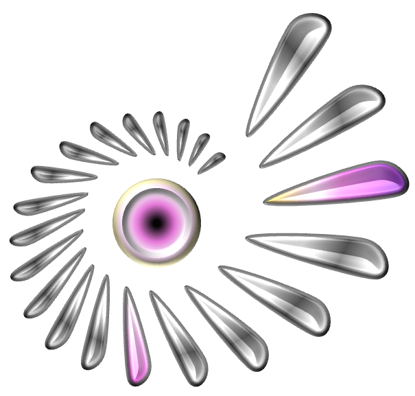
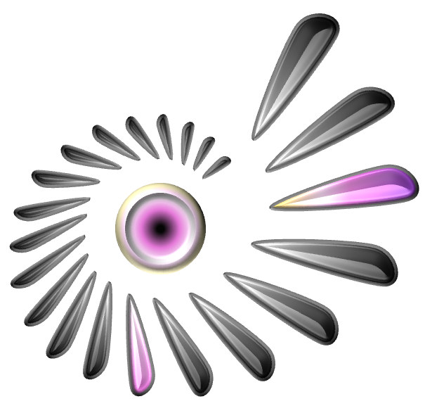

LEARNING FROM EXECUTED OUTCOMES
Successful candidates receive decision mass. Local success–failure pairs sharpen the action boundary; the correction penalty keeps the update localized.
Outcomes supervise training. At selection time, the operator consumes predictive evidence.
CROSS-TASK VALIDATION